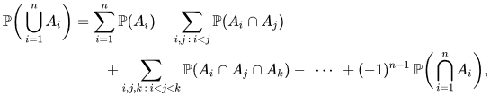

Principio de inclusión-exclusión
Definición
En combinatoria, el principio de inclusión-exclusión (conocido también como principio de la criba) permite calcular el cardinal de la unión de varios conjuntos, mediante los cardinales de cada uno de ellos y todas sus posibles intersecciones. Si A1, ..., An son conjuntos finitos entonces:
donde |A| denota el cardinal de A. Una escritura más rigurosa pero menos legible es:
Tomando n=2 tenemos un caso de doble conteo, podemos hallar el tamaño de la unión de dos conjuntos A y B sumando |A| y |B| y restando el tamaño de su intersección. El nombre proviene de la idea en la que el principio se basa: una muy generosa inclusión seguida de una compensadora exclusión. Si n>2 la exclusión de las parejas de intersecciones es (tal vez) demasiado rigurosa y la fórmula correcta es como se muestra, con signos alternados.
El gráfico de la derecha ilustra el caso de tres conjuntos A, B y C. Pero no se pueden utilizar varias veces
El principio de inclusión-exclusión en probabilidad
En probabilidad, para sucesos A1, ..., An en un espacio probabilístico , el principio de inclusión-exclusión para n = 2 toma la forma:
Para n = 3:
Que puede escribirse más concisamente como:
Donde la última suma recorre los subconjuntos I de índices 1, ..., n que contienen exactamente k elementos y
Denota la intersección de todos los Ai con índices en I.
El principio también se verifica para un espacio general de medida (S,Σ,μ) y subconjuntos medibles A1, ..., An de medida finita sin más que reemplazar por μ.

Cuestionario
Problemas sugeridos
- Problema 1 No resuelto
- Problema 2 No resuelto